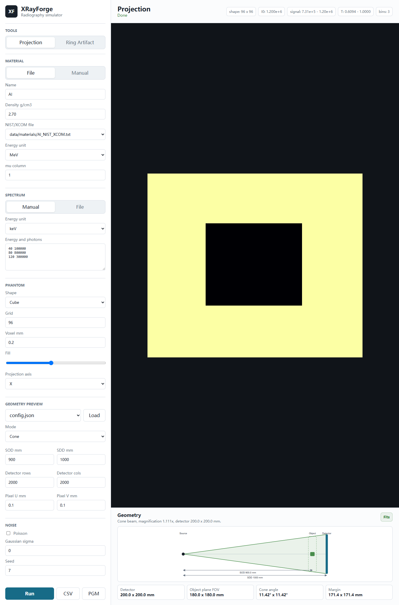

材料动态力学
研究镁合金在高应变率和冲击载荷下的强度、塑性变形与速率效应。

Materials dynamics · X-ray imaging · Scientific software
X射线成像和CT全过程模拟仿真
工业CT高质量重构研究
基于深度学习的图像处理
极端载荷和高时间分辨率下的变形、损伤与失效机理研究
Research focus
围绕轻质合金的动态响应，结合冲击实验、力学分析和先进 X 射线表征，理解微结构与宏观失效之间的联系。
研究镁合金在高应变率和冲击载荷下的强度、塑性变形与速率效应。
分析析出相、孪晶和孔洞演化对动态屈服与层裂强度的影响。
利用原位衍射和三维层析成像，捕捉材料内部变形、缺陷与断裂过程。
将成像物理、数据处理与可复现实验流程转化为清晰可靠的软件工具。
Publications
论文列表通过 ORCID、DOI、作者聚类和研究团队公开目录交叉核验。
Materials Science and Engineering: A · Vol. 960 · 150071
Journal of Magnesium and Alloys · Vol. 19 · 102049
Journal of Magnesium and Alloys · Vol. 17 · 101938
European Journal of Mechanics - A/Solids · Vol. 115 · 105783
Materials Science and Engineering: A · Vol. 926 · 147882
Selected project

Scientific software
面向科研与工程验证的 X 射线正投影和 CT 前向仿真平台。让材料、能谱、几何和探测器响应的完整物理链路清晰可见。
进入项目页 ↗